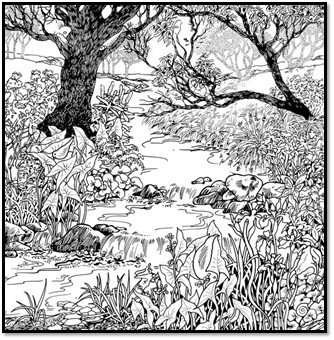
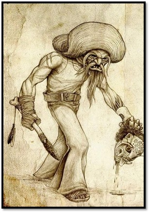
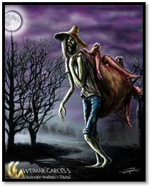

Al principio todo era caos...

Lee el siguiente texto con mucha atención, luego contesta las preguntas

El Comegente
El Comegente es una leyenda exclusiva de Antioquia. Aunque cobró muchas víctimas, nunca se supo de alguien que lo hubiera visto. Sin embargo, todos dicen que era un hombre grande y corpulento, que iba desnudo por el bosque, pero al acercarse a una casa, se convertía en un hombre normal y pedía posada. Al amanecer desaparecía con uno de los niños de la casa y nunca más volvía a saberse de él.
Dicen los campesinos que, en cierta ocasión, un grupo de hombres decidieron capturar al Comegente. Buscaron por todas partes, pero no encontraron ni rastro de él, ni de sus víctimas. Cuando ya los hombres estaban a punto de desistir de la búsqueda, encontraron una cabaña en la que había unos huesos y un gran cuchillo. Se dice que desde ese día el Comegente no volvió a Anorí, el pueblo en que más se había amañado.

Cuentame...
...hasta que un dia...
El artículo es una clase de palabra que precede al sustantivo para determinarlo y concuerda con el género y el número:
- La casa
- Los niños
- El hombre
- Las luces
- Un pueblo
- Una luz
- Unos dioses
- Unas deidades
Los artículos se clasifican en determinados/definidos y en indeterminados/indefinidos:
Los artículos definidos o determinados se refieren, generalmente, a seres o cosas previamente conocidos por los hablantes:
| Singular |
Plural |
| EL |
LOS |
| LA |
LAS |
| LO |
Los artículos indefinidos o indeterminados se refieren, generalmente, a seres o cosas no conocidos o imprecisos por los hablantes:
| Singular |
Plural |
| UN |
UNOS |
| UNA |
UNAS |
...valeroso se endrentó a...
1. En tu primer reto, escribirás el artículo que corresponda en las siguientes oraciones:
El artículo neutro (lo) es el que se usa para sustantivar (convertir una palabra en sustantivo) un adjetivo.
Por ejemplo:
Lo terrorífico…
También es posible emplear el artículo neutro para acompañar pronombres relativos.
Por ejemplo:
Lo que hizo el Comegente fue salvaje.

Debido al carácter de determinación que poseen los nombres propios, estos no suelen ir acompañados de artículo; sin embargo, es frecuente encontrarlo en contextos regionales o coloquiales.
Por ejemplo: El Comegente, el Juan, la Argentina.
3. Prepárate, el siguiente reto requiere de mucha concentración. Vuelve a
la leyenda del Comegente e inténtala leer sin los artículos. Cuéntanos qué opinas, ¿los artículos son importantes para entender el sentido del texto? ¿Por qué?
Cuando el artículo el va precedido de las preposiciones de y a, se producen las formas del y al por contracción.
Por ejemplo: Los campesinos delA el pueblo buscaron alA el Comegente.
...desde entonces...